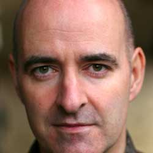

|
| Home The Doctors The Companions The Villians Show History |
Nicholas BriggsNicholas Briggs (born 29 September 1961 in London, England)[1] is a British actor and writer, predominantly associated with the BBC science fiction television series Doctor Who and its various spin-offs, particularly as the voice of the Daleks and the Cybermen. Briggs sometimes uses the pseudonym Arthur Wallis.
|
|
Madeleine Schwartz Ann Marie Skjold |
Content derived from Dr. Who Wikipedia.
|